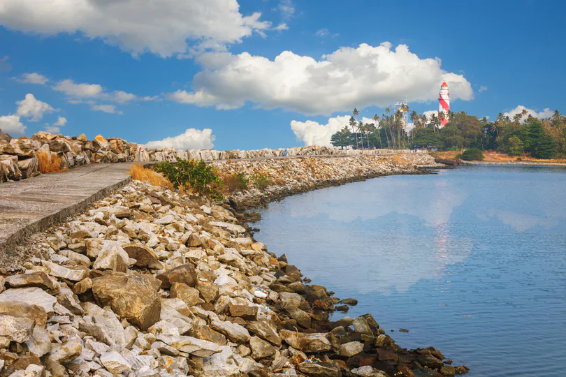

KOLLAM
Kollam is a city in the state of Kerala, on India's Malabar Coast. It’s known as a trade hub and for its beaches, like lively Kollam and secluded Thirumullavaram. Sardar Vallabhbhai Patel Police Museum has artifacts tracing the history of the police force. Nearby, Ashtamudi Lake is a gateway to the Kerala backwaters, a network of waterways rich with vegetation. The striped 1902 Tangasseri Lighthouse has ocean views
ASHTAMUDI LAKE
Ashtamudi Lake, in the Kollam District of the Indian state of Kerala, is the most visited backwater and lake in the state. It possesses a unique wetland ecosystem and a large palm-shaped water body, second only in size to the Vembanad estuary ecosystem of the state. Ashtamudi means 'eight braids' in the local Malayalam language. The name is indicative of the lake's topography with its multiple branches. The lake is also called the gateway to the backwaters of Kerala and is well known for its houseboat and backwater resorts. Ashtamudi Wetland was included in the list of wetlands of international importance, as defined by the Ramsar Convention for the conservation and sustainable utilization of wetlands. Along both banks of the lake and its backwater canals, coconut groves and palm trees interspersed with towns and villages are seen. Kollam, is an important historic port city located on the right bank of the lake. Boat cruises are operated by the Kollam Boat Club from Kollam to Alappuzha providing transport access to many other towns and villages along this route. Luxury houseboats also operate on the lake.
KOLLAM BEACH
Kollam Beach, also known as Mahatma Gandhi Beach, is a beach at Kollam city in the Indian state of Kerala. Kollam Beach is the first 'Beach Wedding Destination' in Kerala. The beach also features a park of international standard, the Mahatma Gandhi Park, which was inaugurated on 1 January 1961 by the then Vice President of India, Zakir Hussain. Kollam beach is one among the few beaches in Kerala with a lifeguard outpost. Lifeguards were stationed at the beach from 2005. As of July 2015 Kovalam, Kollam is one among the three beaches in south Kerala with lifeguard outposts

